Dokumentasi refleksi dan analisis artefak pembelajaran Program Pendidikan Profesi Guru,
disusun melalui pendekatan 4C — Connection, Challenge, Concept, Change.
Saya adalah mahasiswa Pendidikan Profesi Guru (PPG) di Universitas Pendidikan Ganesha
yang sedang melaksanakan PPL Mandiri di SMP Negeri 2 Singaraja pada mata pelajaran
Informatika, Fase D Kelas IX.
Saya senang memadukan teknologi dengan pembelajaran, mulai dari media digital interaktif,
e-book, hingga web pembelajaran, agar materi Informatika terasa dekat, bermakna, dan
menyenangkan bagi peserta didik.
Inspirasi dan Tujuan
1
Apa visi saya untuk pendidikan di Indonesia?
Pendidikan di Indonesia yang berpusat pada peserta didik, membentuk karakter sekaligus
mengembangkan potensi, sehingga setiap anak tumbuh menjadi pribadi yang berpikir kritis,
kreatif, mandiri, dan bijaksana menghadapi perkembangan zaman dan teknologi.
2
Apa visi saya sebagai calon guru?
Menjadi guru profesional yang tidak hanya menyampaikan materi, tetapi juga membimbing,
memotivasi, dan menjadi teladan, serta mengajak peserta didik memanfaatkan teknologi
secara positif dan bertanggung jawab.
3
Apa yang akan saya lakukan untuk mencapai visi tersebut?
Memahami karakteristik peserta didik melalui asesmen awal, merancang pembelajaran yang
bermakna dan menyenangkan dengan media digital, serta terus berefleksi dan
mengembangkan kompetensi sebagai guru.
“Guru yang baik tidak hanya mengajar, tetapi menuntun setiap peserta didik menemukan potensinya.”
Semester 1
Refleksi Mata Kuliah Semester 1
Semester 1 merupakan tahap awal dalam proses pembelajaran yang memberikan berbagai pengalaman,
pemahaman, dan refleksi mengenai pendidikan, peserta didik, pembelajaran, serta pengalaman
praktik di lingkungan pendidikan.
Tidak ada mata kuliah yang cocok dengan pencarianmu.
Semester 2
Refleksi Mata Kuliah Semester 2
Semester 2 merupakan tahap lebih lanjut dalam proses pembelajaran yang memberikan berbagai pengalaman,
pemahaman, dan refleksi mengenai pendidikan, peserta didik, pembelajaran, serta pengalaman
praktik di lingkungan pendidikan.
Tidak ada mata kuliah yang cocok dengan pencarianmu.
Refleksi Akhir
Refleksi Pengalaman Belajar Selama Mengikuti PPG
1
Setelah mengikuti rangkaian refleksi pengalaman belajar, menurut Anda, bagaimana seharusnya pendidikan di Indonesia?
Menurut saya, pendidikan di Indonesia seharusnya tidak hanya berfokus pada pencapaian akademik, tetapi juga pada pembentukan karakter dan pengembangan potensi peserta didik. Guru perlu memahami bahwa setiap peserta didik memiliki kemampuan, minat, kebutuhan, dan latar belakang yang berbeda. Oleh karena itu, pembelajaran harus berpusat pada peserta didik, disesuaikan dengan kebutuhan mereka, serta mendorong mereka untuk berpikir kritis, kreatif, mandiri, dan mampu menerapkan pengetahuan dalam kehidupan sehari-hari. Pendidikan juga perlu menanamkan nilai moral, tanggung jawab, dan sikap saling menghargai agar peserta didik dapat menghadapi perkembangan zaman dan teknologi dengan bijaksana.
2
Apa saja yang dapat Anda lakukan untuk menjadi guru profesional?
Untuk menjadi guru profesional, saya perlu terus meningkatkan kompetensi pedagogik, profesional, sosial, dan kepribadian. Berdasarkan pengalaman belajar selama PPG, saya menyadari pentingnya memahami karakteristik peserta didik, merancang pembelajaran yang bermakna, menerapkan asesmen awal, formatif, dan sumatif, serta melakukan refleksi untuk memperbaiki proses pembelajaran. Selain itu, saya perlu menerapkan growth mindset, mengembangkan kemampuan sosial emosional, memberikan teladan yang baik, dan mematuhi kode etik profesi guru. Melalui praktik mengajar dan evaluasi secara berkelanjutan, saya berharap dapat menjadi guru yang mampu membimbing peserta didik sesuai dengan kebutuhan dan potensinya.
3
Rencana Tindak Lanjut: Apa saja tiga hal penting yang akan Anda lakukan ketika memulai karier sebagai guru?
Memahami karakteristik dan kebutuhan peserta didik.
Saya akan melakukan asesmen awal untuk mengetahui kemampuan, minat, dan kebutuhan belajar peserta didik. Hasilnya akan saya gunakan untuk merancang pembelajaran yang sesuai dengan kondisi mereka.
Menciptakan pembelajaran yang bermakna dan menyenangkan.
Saya akan menggunakan metode, media digital, dan kegiatan pembelajaran yang bervariasi agar peserta didik aktif, mampu berpikir kritis, serta dapat menerapkan pengetahuan dalam kehidupan sehari-hari. Saya juga akan menanamkan nilai moral dan karakter melalui kegiatan pembelajaran.
Terus mengembangkan diri dan melakukan refleksi.
Saya akan mengevaluasi pembelajaran yang telah dilaksanakan, menerima masukan dari peserta didik dan rekan guru, serta mengikuti kegiatan pengembangan kompetensi. Saya juga akan berusaha menerapkan kode etik profesi dan menjadi teladan bagi peserta didik dalam sikap maupun perilaku.
Karya Inovasi
Karya Inovasi
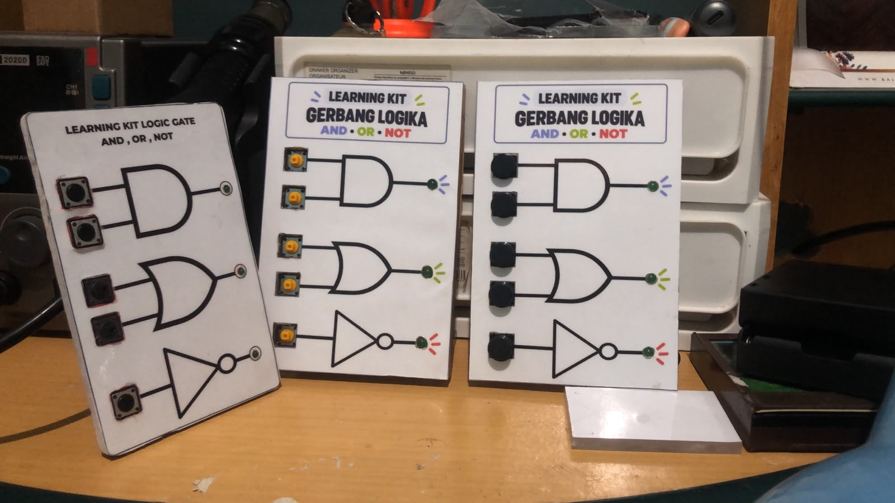
Learning Kit Gerbang Logika AND, OR, dan NOT1
Pengertian Learning Kit Gerbang Logika
Learning Kit Gerbang Logika adalah media pembelajaran praktik berupa seperangkat alat yang digunakan untuk memperagakan cara kerja gerbang logika AND, OR, dan NOT. Peserta didik dapat mencoba berbagai kombinasi input, lalu mengamati output yang dihasilkan melalui nyala lampu LED, sehingga konsep logika yang abstrak menjadi lebih konkret dan mudah dipahami.
2
Gagasan & Riset
Gagasan inovasi ini berawal dari pengalaman saya melaksanakan Praktik Pengalaman Lapangan (PPL) di SMP Negeri 2 Singaraja, khususnya saat mengajar di kelas VIII.1 dan VIII.5. Ketika mempelajari materi gerbang logika, beberapa siswa masih mengalami kesulitan memahami cara kerja gerbang logika melalui contoh saklar lampu LED. Selain itu, terdapat siswa yang kurang tertarik mengikuti pembelajaran, mudah terdistraksi, dan kondisi kelas yang kurang kondusif.
Sebagai solusi, saya mengembangkan Learning Kit Gerbang Logika AND, OR, dan NOT sebagai media pembelajaran praktik. Media ini diharapkan dapat membantu siswa memahami konsep gerbang logika secara lebih konkret, menarik, dan interaktif melalui kegiatan mencoba kombinasi input serta mengamati hasil output. Dengan demikian, siswa dapat lebih aktif, fokus, dan mudah memahami hubungan antara konsep logika dengan penerapannya dalam kehidupan sehari-hari.
3
Rancangan & Implementasi
Rancangan
Pembuatan Learning Kit Gerbang Logika AND, OR, dan NOT melalui beberapa tahapan yang dilakukan, mulai dari perancangan komponen dan simulasi, perancangan desain, pembuatan media, serta pengujian fungsi.
1. Perancangan Komponen dan Simulasi
Pada tahap ini, saya merancang dan menyimulasikan rangkaian komponen menggunakan Tinkercad. Simulasi ini dilakukan untuk menguji rancangan terlebih dahulu agar proses pengembangan lebih efisien dan dapat menghemat biaya sebelum membeli komponen fisik. Gambar 1 menunjukkan hasil rancangan awal Learning Kit Gerbang Logika menggunakan Tinkercad.
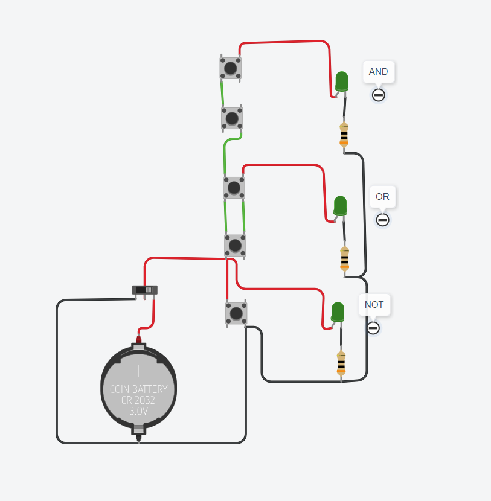
Gambar 1. Rancangan awal Learning Kit Gerbang Logika menggunakan Tinkercad
Rancangan yang telah dibuat kemudian disimulasikan untuk menguji fungsi rangkaian dan memastikan Learning Kit Gerbang Logika bekerja sesuai dengan yang diharapkan (Gambar 2).
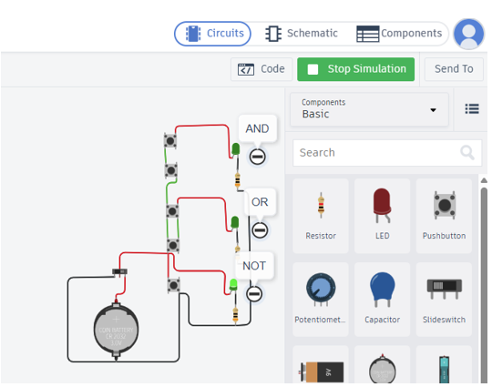
Gambar 2. Simulasi rangkaian Learning Kit Gerbang Logika menggunakan Tinkercad
Berdasarkan Gambar 2, simulasi rangkaian dimulai dengan menekan tombol Start Simulation hingga tombol berubah warna menjadi hijau. Tombol Stop Simulation digunakan untuk menghentikan simulasi. Pengujian dilakukan dengan mengklik saklar untuk melihat respons rangkaian. Rangkaian berhasil disimulasikan, tetapi pengujian gerbang logika AND masih terkendala karena penggunaan satu pointer mouse hanya memungkinkan satu saklar diklik pada satu waktu. Meskipun demikian, simulasi awal berhasil dilakukan dan menjadi dasar untuk melanjutkan proses pembuatan Learning Kit Gerbang Logika.
2. Perancangan Desain
Pada tahap ini, saya merancang desain bodi, cover depan, dan bentuk 3D Learning Kit Gerbang Logika sebagai acuan dalam proses pembuatan media pembelajaran. Rancangan meliputi ukuran, bentuk, dan tata letak komponen agar media mudah dibuat dan digunakan.
a. Desain Bodi
Desain bodi Learning Kit Gerbang Logika dirancang menjadi tiga bagian, yaitu bagian depan, belakang, dan samping. Setiap bagian memiliki ukuran yang disesuaikan untuk membentuk bodi media pembelajaran. Rancangan ini digunakan sebagai acuan dalam proses pembuatan bodi Learning Kit Gerbang Logika.
1) Desain Bagian Depan. Desain bagian depan berukuran 15 × 10 cm. Rancangan dapat dilihat pada Gambar 3.
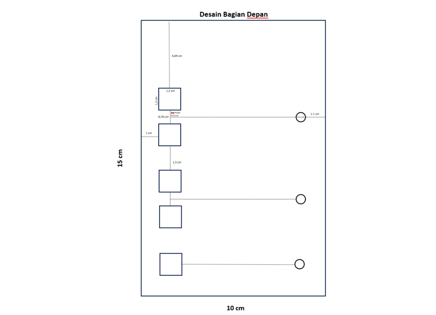
Gambar 3. Desain bagian depan (15 × 10 cm)
2) Desain Bagian Belakang. Desain bagian belakang berukuran 9 × 14 cm dengan lubang berukuran 7 × 5 cm. Lubang tersebut berjarak 1 cm dari sisi kiri dan kanan serta 1,7 cm dari sisi bawah. Rancangan dapat dilihat pada Gambar 4.
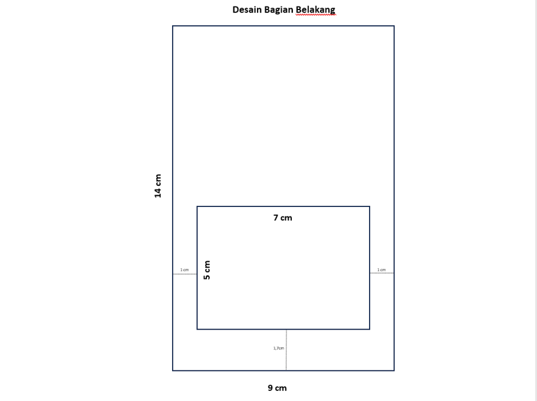
Gambar 4. Desain bagian belakang (9 × 14 cm)
3) Desain Bagian Samping. Desain bagian samping terdiri atas dua bagian berukuran 15 × 1 cm dan dua bagian berukuran 9 × 1 cm. Bagian-bagian tersebut digunakan untuk membentuk sisi bodi Learning Kit Gerbang Logika. Rancangan dapat dilihat pada Gambar 5.
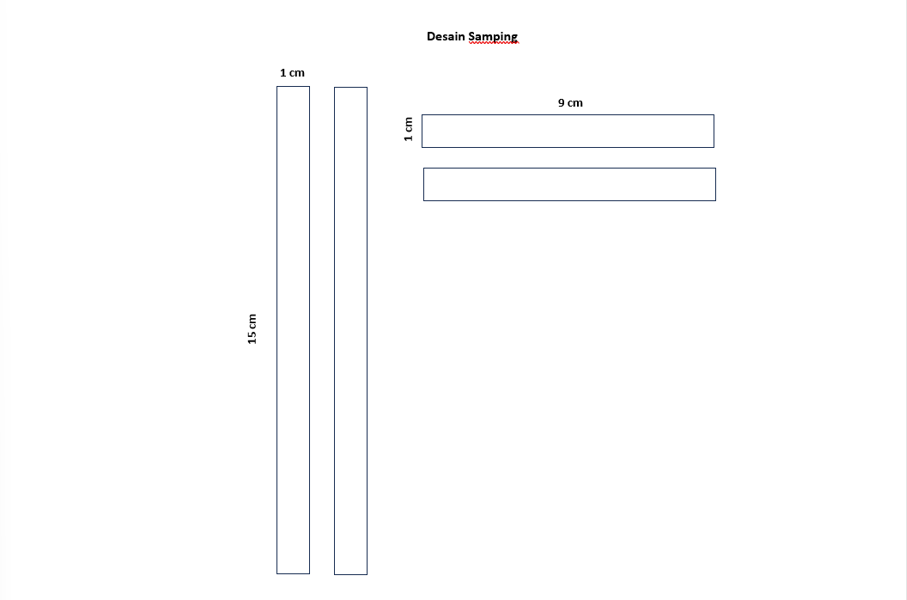
Gambar 5. Desain bagian samping
b. Desain Cover
Desain cover dibuat sebagai tampilan depan Learning Kit Gerbang Logika. Desain ini menampilkan nama karya inovasi dan simbol gerbang logika AND, OR, dan NOT. Rancangan cover dapat dilihat pada Gambar 6.
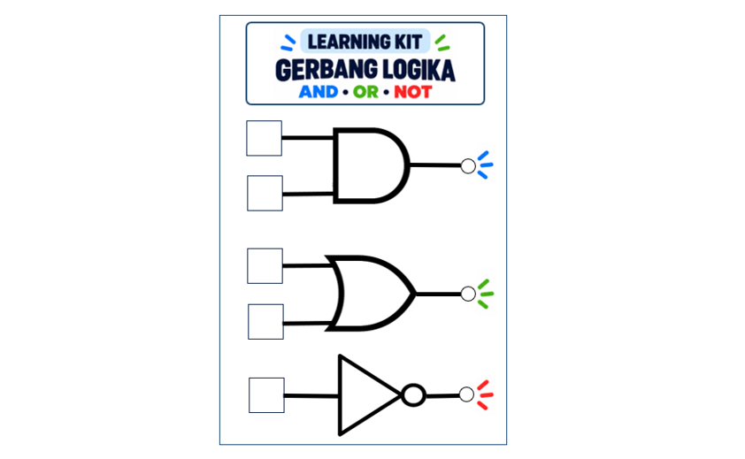
Gambar 6. Desain cover Learning Kit Gerbang Logika
c. Desain 3D
Berdasarkan rancangan sebelumnya, saya membuat desain 3D untuk mempermudah proses pembuatan Learning Kit Gerbang Logika. Desain ini dibuat menggunakan perangkat lunak SketchUp dengan mempertimbangkan bentuk dan ukuran setiap bagian. Bodi direncanakan menggunakan bahan akrilik dengan ketebalan 0,5 mm agar bentuk media lebih kokoh. Hasil desain 3D dapat dilihat pada Gambar 7.
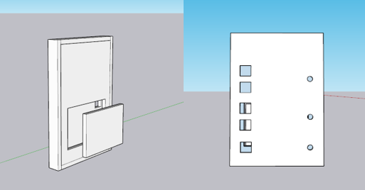
Gambar 7. Hasil desain 3D Learning Kit Gerbang Logika (SketchUp)
3. Pembuatan Media
Proses pembuatan media dilakukan melalui perakitan komponen secara langsung berdasarkan rancangan yang telah dibuat. Komponen yang digunakan dalam perakitan Learning Kit Gerbang Logika ditampilkan pada Tabel 1.
Tabel 1. Daftar Komponen Learning Kit Gerbang Logika
No.
Nama Komponen
Jumlah
Fungsi
1
Saklar/Switch
5
Mengatur input logika 0 dan 1.
2
LED Green 5 mm
3
Menampilkan hasil output gerbang logika.
3
Resistor 30 Ohm
3
Membatasi arus listrik agar LED tidak rusak.
4
Kabel penghubung 1 meter
2
Menghubungkan komponen dalam rangkaian.
5
Konektor Baterai Jam/RTC
1
Menghubungkan baterai dengan dudukan atau terminal rangkaian.
6
Baterai Jam/RTC
1
Sebagai sumber tegangan pada rangkaian.
7
Saklar on off
1
Menghubungkan dan memutus aliran listrik untuk menyalakan atau mematikan rangkaian.
Berdasarkan Tabel 1, seluruh komponen telah disiapkan untuk proses perakitan. Pada tahap ini, komponen dirakit sesuai dengan rancangan rangkaian yang telah dibuat. Bodi juga dirakit sesuai desain dan direkatkan menggunakan lem akrilik agar sambungannya kuat dan kokoh. Hasil perakitan komponen dan bodi dapat dilihat pada Gambar 8.
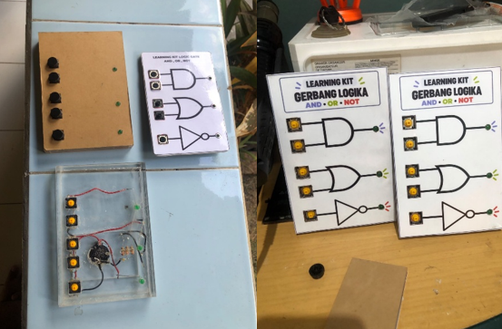
Gambar 8. Hasil perakitan komponen dan bodi
4. Pengujian Fungsi
Pada tahap pengujian fungsi, Learning Kit Gerbang Logika diuji setelah proses perakitan selesai. Pengujian dilakukan untuk memastikan setiap gerbang logika berfungsi dengan baik sebelum digunakan dalam pembelajaran di kelas. Hasil pengujian dapat dilihat pada Tabel 2.
Tabel 2. Hasil Pengujian Learning Kit Gerbang Logika
No
Gerbang Logika
Input A
Input B
Output yang Diharapkan
Hasil Pengujian
Status
1
AND
0
0
0
LED mati (0)
Berhasil
2
AND
0
1
0
LED mati (0)
Berhasil
3
AND
1
0
0
LED mati (0)
Berhasil
4
AND
1
1
1
LED menyala (1)
Berhasil
5
OR
0
0
0
LED mati (0)
Berhasil
6
OR
0
1
1
LED menyala (1)
Berhasil
7
OR
1
0
1
LED menyala (1)
Berhasil
8
OR
1
1
1
LED menyala (1)
Berhasil
9
NOT
0
–
1
LED menyala (1)
Berhasil
10
NOT
1
–
0
LED mati (0)
Berhasil
Implementasi
Pada tahap implementasi, Learning Kit Gerbang Logika diterapkan dalam pembelajaran Informatika di kelas VIII.1 dan VIII.5 SMP Negeri 2 Singaraja. Pelaksanaan pembelajaran dilakukan melalui dua tahap, yaitu demonstrasi penggunaan learning kit oleh guru dan praktik langsung oleh peserta didik menggunakan Lembar Kerja Peserta Didik (LKPD).
1. Demonstrasi oleh Guru
Pada tahap ini, guru memperagakan penggunaan Learning Kit Gerbang Logika saat menjelaskan materi melalui slide PPT. Demonstrasi ini bertujuan menghubungkan pengetahuan awal peserta didik tentang saklar lampu dengan pengetahuan baru mengenai gerbang logika AND, OR, dan NOT. Penggunaan contoh saklar lampu dalam kehidupan sehari-hari diharapkan dapat membantu peserta didik memahami konsep gerbang logika secara lebih konkret melalui proses asimilasi. Slide PPT yang digunakan dalam pembelajaran dapat dilihat pada Gambar 9.
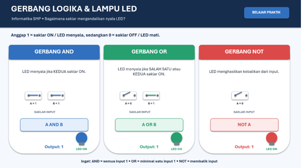
Gambar 9. Slide PPT yang digunakan dalam pembelajaran
2. Praktik oleh Peserta Didik
Pada tahap ini, peserta didik bekerja secara berkelompok menggunakan Learning Kit Gerbang Logika dan LKPD yang telah disiapkan oleh guru. LKPD digunakan sebagai panduan dan acuan dalam mencoba setiap gerbang logika melalui praktik secara langsung. Kegiatan dimulai dari gerbang logika dasar AND, OR, dan NOT, kemudian dilanjutkan dengan latihan rangkaian gabungan yang terdiri atas dua, tiga, hingga empat gerbang logika. Melalui kegiatan ini, peserta didik dibimbing untuk memahami materi secara bertahap dengan mengamati kondisi LED, mengisi tabel output, dan mengombinasikan beberapa gerbang logika sesuai petunjuk pada LKPD. LKPD yang digunakan dalam kegiatan praktik dapat dilihat pada Gambar 10.
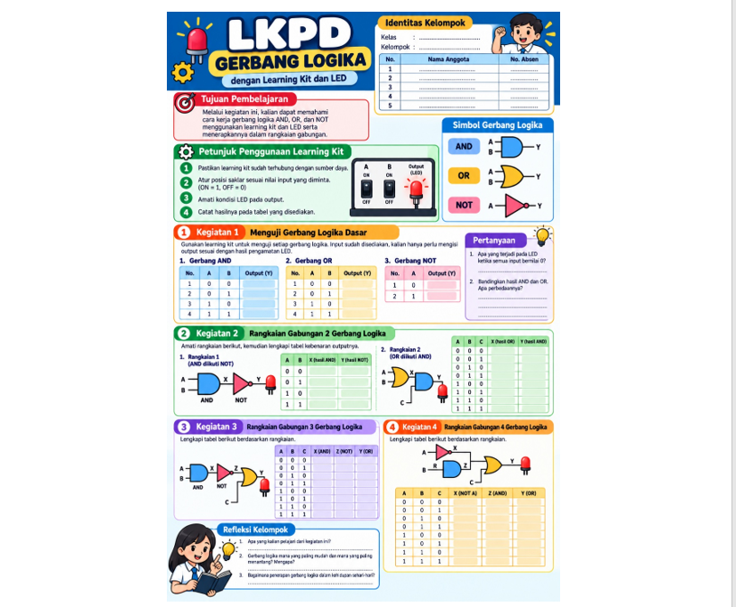
Gambar 10. LKPD yang digunakan dalam kegiatan praktik4
Evaluasi
Inovasi Learning Kit Gerbang Logika AND, OR, dan NOT, tahapan mengukur keberhasilan inovasi berdasarkan prinsip kebaruan, kreativitas, dan kebermanfaatan dapat disusun pada Tabel 3.
Tabel 3. Tahapan Pengukuran Keberhasilan Inovasi
No.
Prinsip
Tahapan Pengukuran
Indikator Keberhasilan
1
Kebaruan
Mengidentifikasi perbedaan media pembelajaran yang digunakan sebelumnya dengan Learning Kit Gerbang Logika. Berdasarkan pengalaman selama PPL, pembelajaran masih menggunakan penjelasan visual melalui PPT dan contoh saklar lampu LED, sedangkan inovasi ini menghadirkan media fisik yang memungkinkan peserta didik mencoba input dan mengamati output secara langsung.
Learning Kit memiliki karakteristik berbeda dari media visual sebelumnya, yaitu memungkinkan peserta didik mengoperasikan saklar dan mengamati perubahan output LED secara langsung.
2
Kreativitas
Menilai kreativitas melalui desain Learning Kit yang menggabungkan saklar, LED, dan gerbang logika AND, OR, serta NOT, disertai LKPD yang memandu peserta didik dari latihan dasar hingga rangkaian gabungan.
Media memiliki desain yang menarik dan mudah digunakan, setiap komponen berfungsi sesuai rancangan, serta LKPD menyajikan latihan secara bertahap dari gerbang logika dasar hingga rangkaian gabungan.
3
Kebermanfaatan
Mengukur manfaat melalui pengamatan keaktifan peserta didik saat praktik, ketepatan jawaban pada LKPD, serta kemampuan mereka menjelaskan hasil output gerbang logika.
Peserta didik terlibat aktif dalam praktik, mampu mengisi tabel output pada LKPD dengan benar, dan dapat menjelaskan hubungan antara kombinasi input dengan output LED.
01
Judul Mata Kuliah
Deskripsi singkat mata kuliah.
Refleksi Pembelajaran Melalui Pendekatan 4C
Pendekatan 4C — Connection, Challenge, Concept, Change — digunakan sebagai
kerangka untuk merefleksikan pengalaman belajar pada mata kuliah ini secara terstruktur:
mulai dari keterkaitan materi dengan peran sebagai calon guru, tantangan yang mengubah cara
pandang, konsep utama yang dipelajari, hingga perubahan konkret yang ingin diterapkan.
Materi Pembelajaran
Bukti Dukungan Hasil Refleksi Pengalaman Belajar
Mengapa Artefak Ini Dipilih?
Bagian Artefak yang Mendukung Hasil Refleksi
Dokumen Pendukung
Dokumen (PDF, PPT, DOCX, gambar, video, atau tautan) yang ditambahkan pada
data documents mata kuliah ini akan tampil dan dapat dibaca langsung di sini.